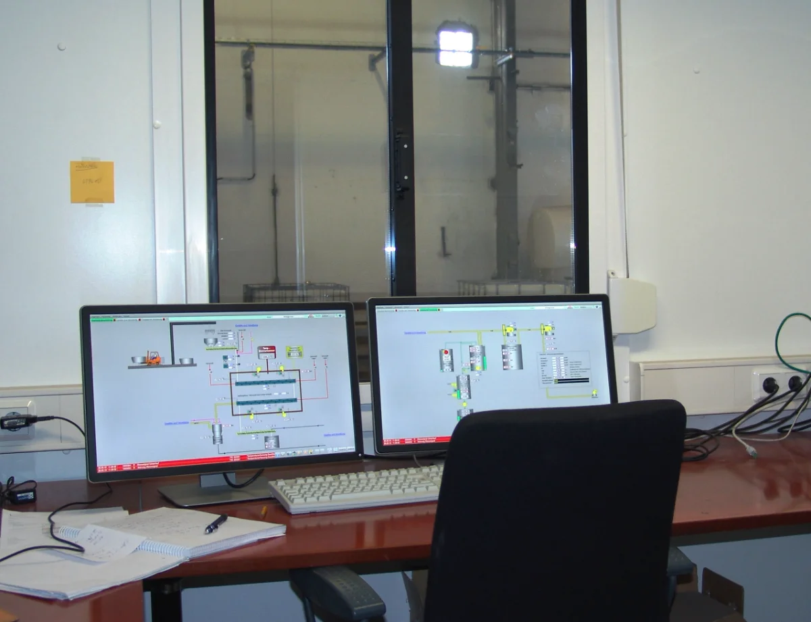
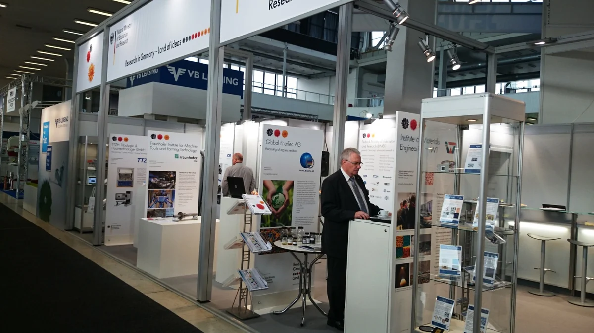

Forschung & Innovation
Entwicklung dort, wo Praxis neue Lösungen braucht.
Seit 2013 betreibt die Global EnerTec AG in Guben Forschungs- und Entwicklungsarbeit an einem breiten Spektrum von Abfall- und Reststoffströmen.
Innovations- und Forschungszentrum Guben
Unsere technologische Kompetenz erweitern wir fortlaufend durch eigene Entwicklung, die wissenschaftliche Zusammenarbeit mit technischen Universitäten und anderen Forschungseinrichtungen in Deutschland sowie die Einbindung ergänzender Partnertechnologien.


Forschung und Förderung
 BSFZ-Siegel 2026
BSFZ-Siegel 2026Das BSFZ-Siegel bestätigt die Forschungs- und Entwicklungskompetenz des Unternehmens.
2× RIK · Unternehmen Revier
Die Global EnerTec AG wurde zweimal im Rahmen des Programms RIK „Unternehmen Revier“ gefördert.
2021–2022
2024–2025